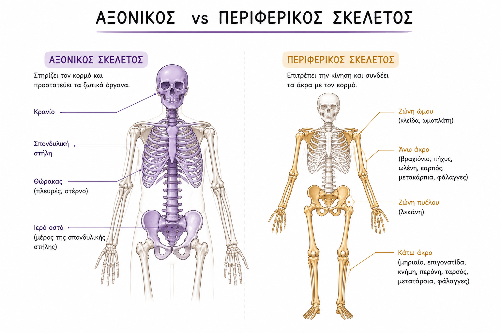
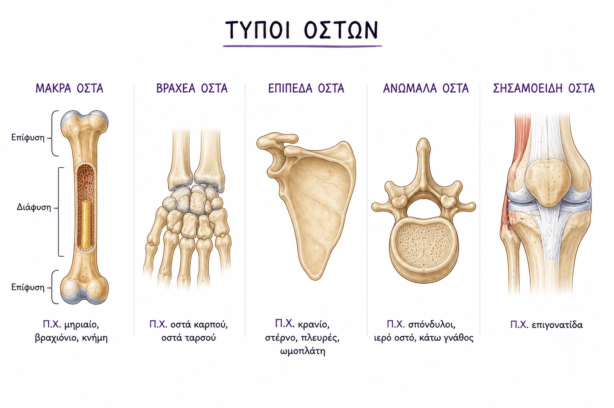
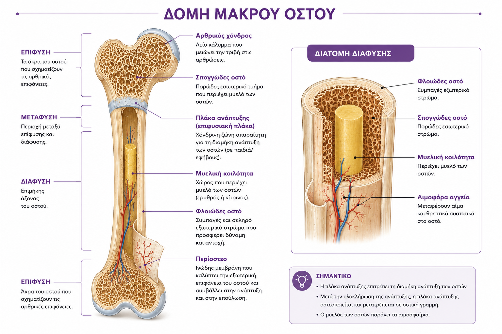
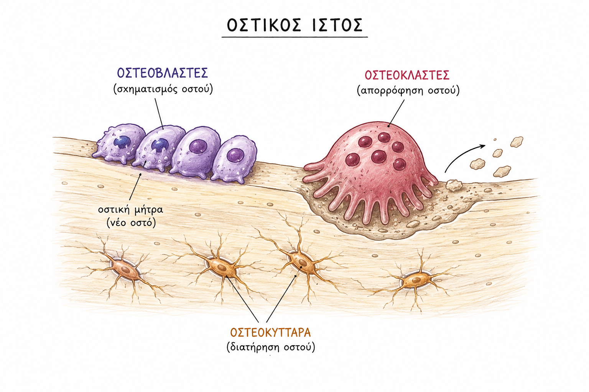
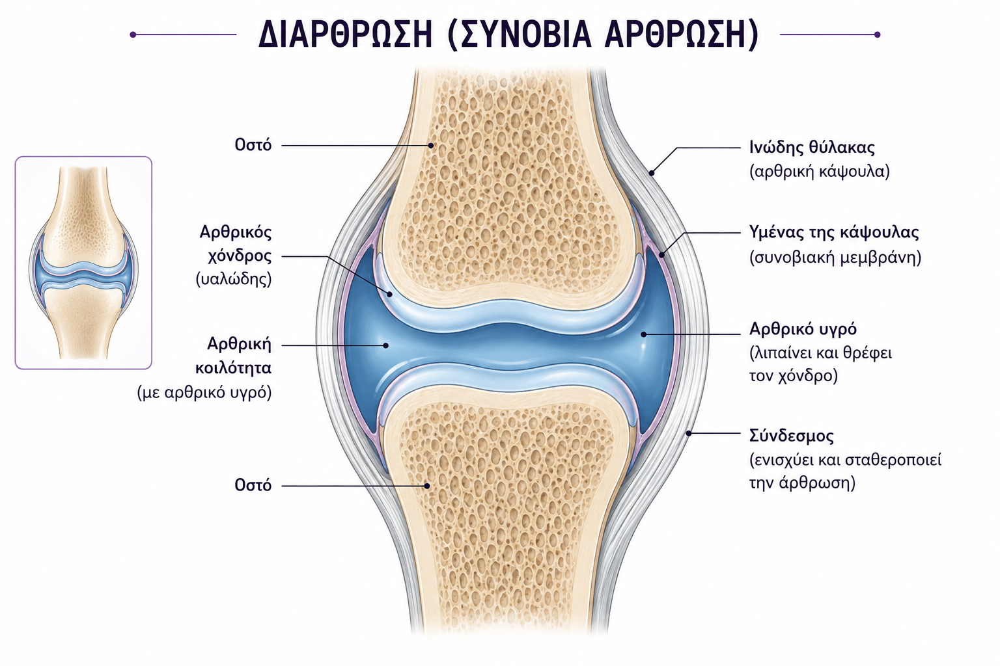

Οστά • αρθρώσεις • τένοντες • μύες • συνδετικός ιστός
Το μυοσκελετικό σύστημα αποτελείται από:
Υποστήριξη του σώματος.
Προστασία ζωτικών οργάνων.
Συνεργασία με το νευρικό σύστημα για κίνηση.
Οι διαταραχές του μυοσκελετικού μπορεί να είναι οξείες ή χρόνιες.
Αίτια: γενετικά, ανοσολογικά, περιβαλλοντικά, διατροφικά, υπερχρησία.
Ο ανθρώπινος σκελετός αποτελείται από 206 οστά.
Προστατεύει: καρδιά, πνεύμονες, εγκέφαλο.
Τα οστά είναι ζωντανός, μεταβολικά ενεργός ιστός.

Επίφυση • διάφυση • μετάφυση
Π.χ. μηριαίο, βραχιόνιο, κνήμη.
Ίσο περίπου μήκος, πλάτος, ύψος.
Π.χ. οστά καρπού, οστά ταρσού.
Προστασία οργάνων + βάση για μυϊκή πρόσφυση.
Π.χ. κρανίο, στέρνο, πλευρές, ωμοπλάτη.
Ακανόνιστο σχήμα.
Π.χ. σπόνδυλοι, ιερό οστό, κάτω γνάθος.
Προστατεύουν τένοντες και μειώνουν τριβή.
Π.χ. επιγονατίδα.

Εξωτερικά: φλοιώδες οστό.
Εσωτερικά: σπογγώδες οστό + μυελός.
Περιόστεο: καλύπτει την εξωτερική επιφάνεια και βοηθά στην επούλωση.

Βασικό δομικό στοιχείο: κολλαγόνο τύπου Ι.
Απορρόφηση οστού.
Σύνθεση οστικής μήτρας.
Εγκλωβισμένοι οστεοβλάστες.

Οι αρθρώσεις αποτελούνται από:
Ο πιο κοινός τύπος άρθρωσης.
Έχει αρθρική κοιλότητα και αρθρικό υγρό.
Πυκνός συνδετικός ιστός.
Συνδέουν τα οστά και προσφέρουν στήριξη.
Καλύπτει τις αρθρικές επιφάνειες.
Δεν έχει νεύρωση → δεν είναι κύρια πηγή πόνου.
Λιπαίνει τον χόνδρο.
Μεταφέρει θρεπτικά συστατικά.

Η κίνηση του σκελετού γίνεται από τους μύες που δρουν στα οστά.
Οι μύες συστέλλονται σε ομάδες: αγωνιστές και ανταγωνιστές.
Εκούσιοι.
Συνδέονται με οστά και τένοντες.
Ακούσιοι.
Βρίσκονται σε κοίλα όργανα, αγγεία, δέρμα, αδένες.
Βρίσκεται μόνο στην καρδιά.
Είναι αυτόματος και ακούσιος.
Ο σκελετικός μυς αποτελείται από:
Κάθε μυϊκή ίνα περιβάλλεται από σαρκόλημμα.
Περιέχει μυοϊνίδια.
Τα μυοϊνίδια αποτελούνται κυρίως από:
Η αύξηση της μυϊκής μάζας στους ενήλικες γίνεται κυρίως με αύξηση μεγέθους των μυϊκών ινών, όχι με αύξηση του αριθμού τους.